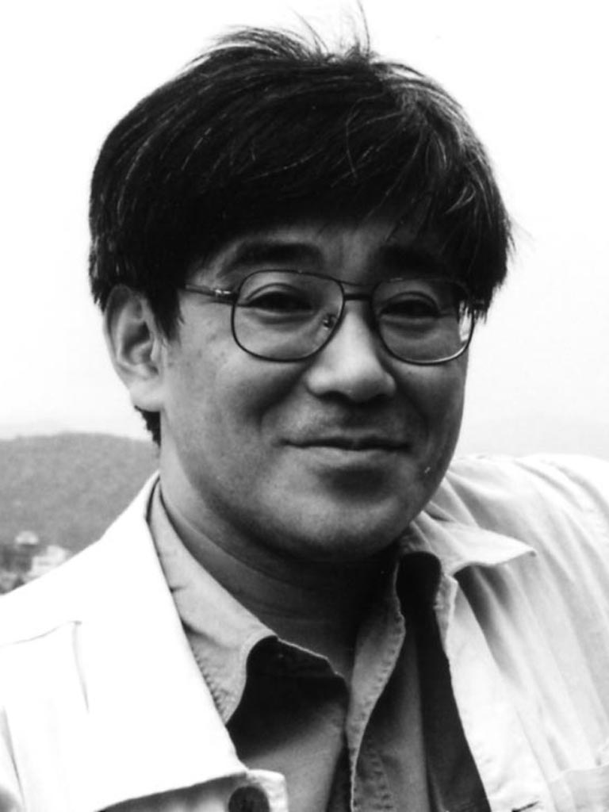

eX 2010
Kyushu University Nakamura Lab. Graduation Work Exhibition
Graduate School of Design | Content and Creative Design Cource
Under Graduate School of Design | Acoustic Design Department
2010.3.5 Friday - 3.6 Saturday
Open 12:00, Close 20:00
entrace free
at Ohashi LUNETTE, fukuoka
eX 2010 九州大学 中村研究室 卒業作品展
九州大学 芸術工学府 コンテンツクリエイティブデザインコース
九州大学 芸術工学部 音響設計学科
教授 中村滋延 NAKAMURA Shigenobu

eXは2005年から毎年催されている中村研究室の卒業・修了作品の展示・上演・上映のアートイベントです。中村研究室では「技術の人間化」という本学の芸術工学の理念を芸術創造の面から追究しています。技術の可能性を経済的価値からのみ考えるのではなく，芸術的価値から考えることによってそれはなされます。学生たちは，「おもしろい」を創り，創られたものに「おもしろい」を発見することに，日々精進しています。
Installation & Screening | 3.5 Fri 12:00-20:00, 3.6 Sat 12:00-20:00
今年度、中村研究室を卒業する学部４年生、修士２年生の作品の展示、ショートフィルム、映画の上映を行います。
Symposium | 3.6 Sat 17:00-19:00
ヨーロッパ、南米など国際的な舞台で活躍し、今年度博士課程を終える藤岡定によるトークを開催します。(聞き手: 中村滋延) また、ドイツ カールスルーエ造形大学からの交換留学生、Florian MeyerとTibor Weissmahrの作品プレゼンテーションを行います。
Performance | 3.5 Fri 19:00-20:00, 3.6 Sat 19:00-20:00
松村智弘、中村智太、Florian Meyer、小山桂、４組による、それぞれの自作音楽ソフトウェアや改造ハードウェアを利用したサウンドパフォーマンスを行います。
IGREIJA POSITISTA is a film about one of the 3 last positivist churches in the world. a sacral form without spiritual content, reflecting on a history about to perish.
this short improvisation presents miniKP, an audio effects processor, which, connected with it's own output, can play it's own emission.